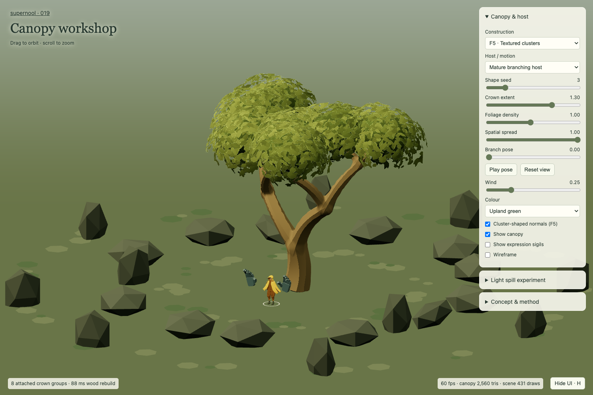
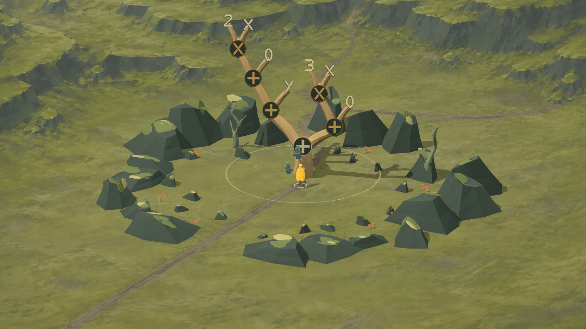
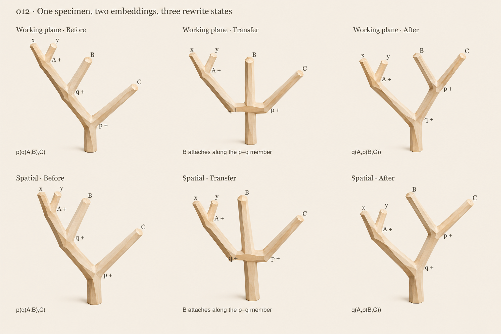
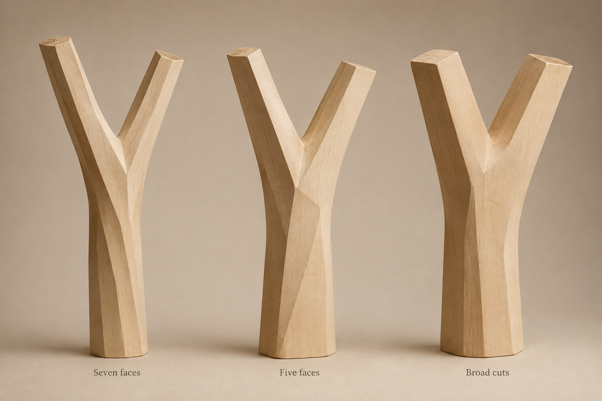
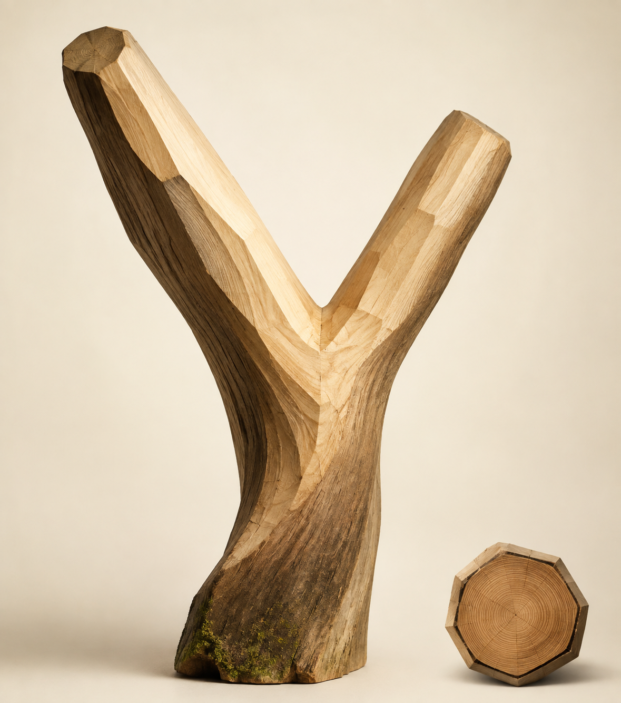
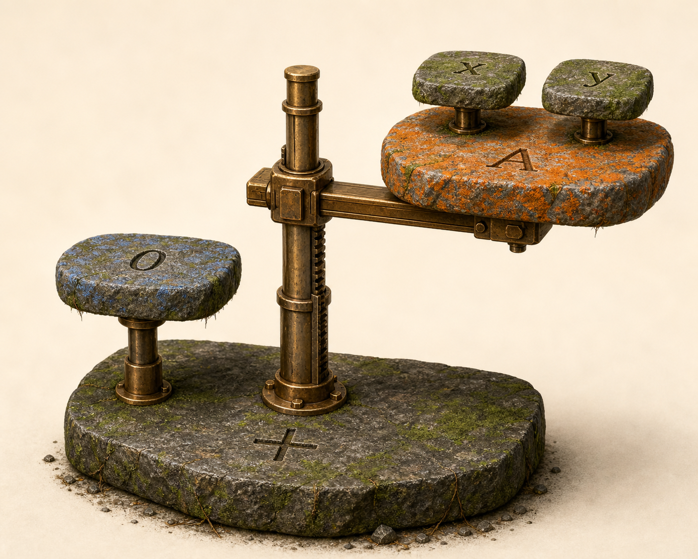
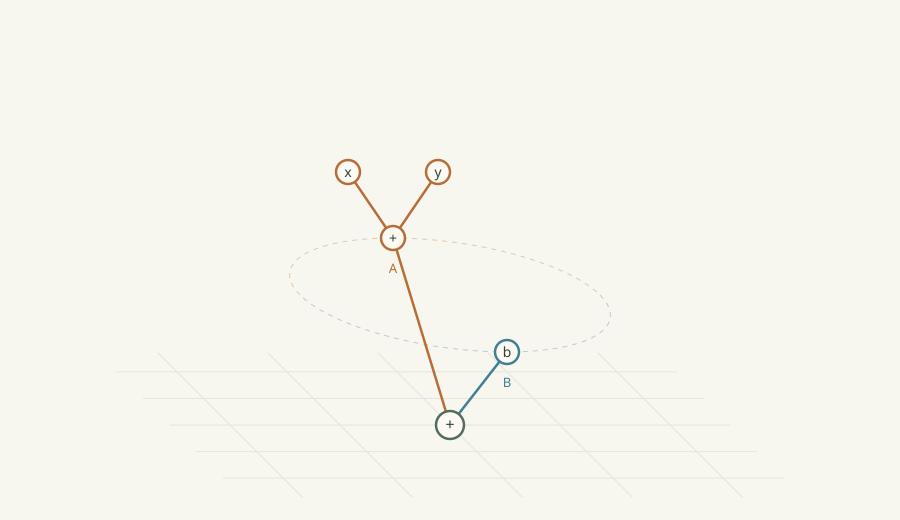
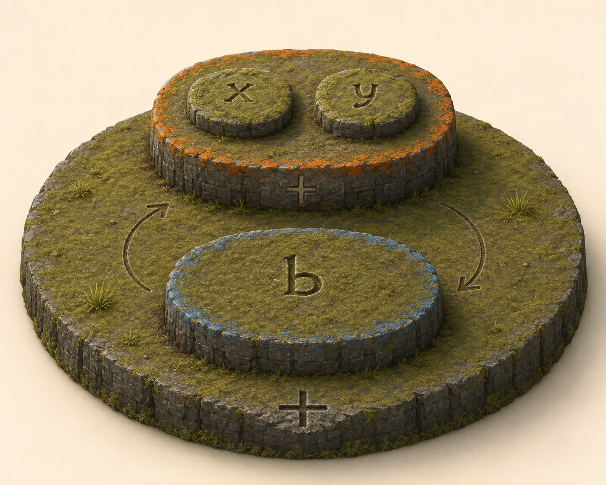
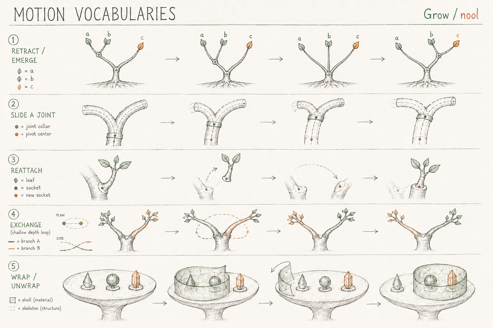
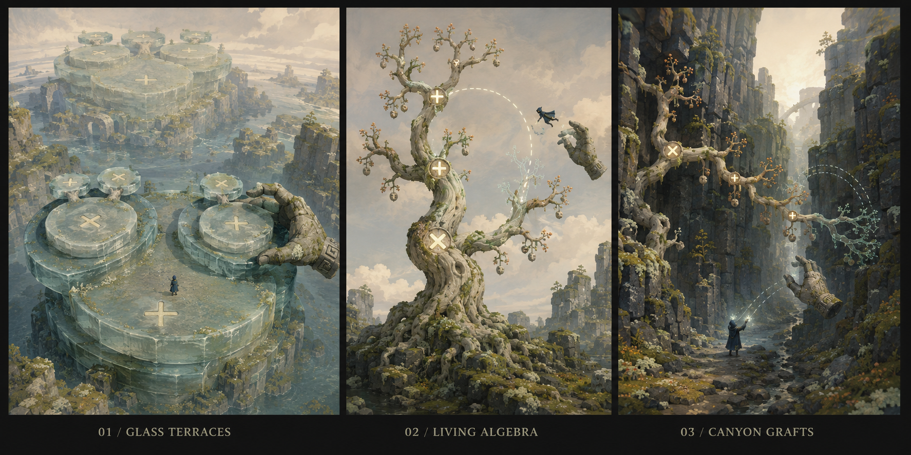

SUPERNOOL · WORKING COLLECTION
Structures, motion, worlds.
A running index of experiments. Earlier work stays available as reference; each new study gets a number. Study 018 tests camera-guided painted terrain, extruded sigils, catch feedback and automatic goal release. Study 017 adds dependable catches, sound cues, quiet collapsible panels and a mossy clearing with luminous routes. Study 016 compares clearer guides, rule loadouts, a second-hand pin and body-driven spring pulling. Study 015 restores physical grip-and-brace manipulation and enlarged hands; 014 remains the menu checkpoint. Study 014 puts real local rewrites into a playable clearing. Study 013 fixes variation controls and reduces rendering work; 012 retains the hewn concept comparison; 011 remains a usable checkpoint; 010 preserves the sharper strip experiment with its known animation failures; 009 retains the hewn concept range. Plateau work is paused; 008 is a parked mechanical variation.

Inhabited trees
Five interactive 3D canopy constructions, led by F5 textured clusters, plus new shadow-foliage concepts and coloured light-spill studies. 018 remains the current playable.

Painted ground
Actual-camera blockouts and paint-over iterations, continuous ground, dimensional glyphs, clearer pull feedback and automatic release at the simplified goal.
Resonant clearing
Latched completion, plucks and recorded catch sounds, white collapsible panels, distinct operator/seed sigils and a rocky clearing with glowing routes and painted surrounding hills and cliffs.
Grip & ground
Off-tree spell names, guide variations, persistent hand attention, a rule loadout and a second-hand pin. Compare direct mouse gestures with body-driven spring pulling.
A hand on the tree
Grip, brace and pull through real rewrites. Reversible held motion, mouse and keyboard grips, articulated auxiliary hands and provisional stone sigils.
The listening grove
Walk up to a 13-node tree, select runes and simplify through swaps, regrouping, zero removal, factoring and arithmetic. Undo, hints and a tucked-away appearance panel.
Grown in space
Working height variation, branching in different planes, local bow, triangle counts and less repeated rendering work. Earlier checkpoints preserved.

Faces through change
Exact SVG → generated concept → live comparison. Sharper faces, studio/cel shading, and spatial trees that settle into a working plane. 011 remains preserved.
Continuous members
Remove collapsing junction ports. Restored swap, emergence, both regroup mappings, depth heights and seeded shape variation. Softer surface; inspect held frames from four directions.
Curved faces, sharp borders
Strong twist with smooth shading inside each cut face; generated trees, identity and associativity. Junction pinching remains unresolved.

Hewn planes
A stronger carved range and explicit polygon faces, shading comparisons and area-based branch radii. Junction finish remains unresolved.

Carved, bent, grown
Live hewn/rounded geometry, taper, curvature, irregularity and associativity height policies. Image is the material target.

Landform and mechanism
Parked mechanical variation. Not the current plateau direction; future work should lean closer to landforms.
Connected surfaces
Anchored identity and both associativity mappings, with a shared remeshed skin. Orbit, scrub, inspect wireframe, and compare plateau sketches.

Direct motion
Swap and regroup intact subtrees. Compare flat crossings, depth orbits and layered plateaus.

Orbit materials
Wooden rune branches and mossy basalt shelves, grounded in one concrete nested swap.
Minimal edit vocabularies
Exact scripts expose why deletion and rebuilding make an awkward account of swapping.

Motion vocabularies
Evocative earlier art. Retained for mood; several diagrams have structural inconsistencies.

First world study
Branches, plateaus and canyon. Early associativity motion, with unresolved joints.